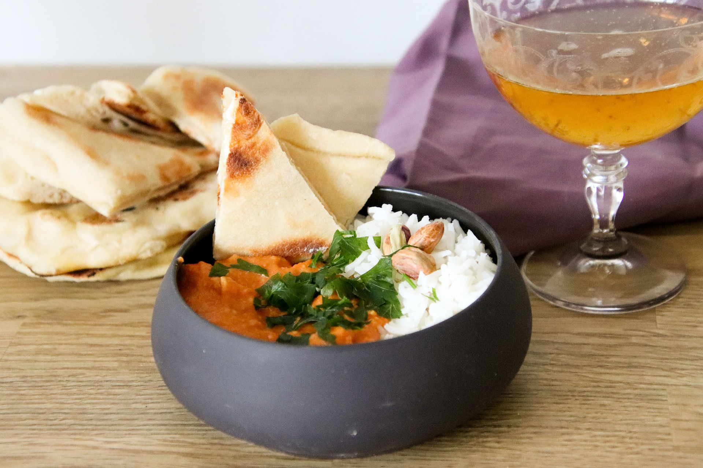

Butter Chicken

Description
An Indian curry made with a spiced tomato and butter sauce. This version of the dish is prepared using a crock pot. It's best served with rice and naan bread
Ingredients
- 2 tablespoons butter
- 2 tablespoons vegetable oil
- 4 large skinless, boneless chicken thighs, cut into bite-sized pieces
- 1 onion, diced
- 3 cloves garlic, minced
- 1 (6 ounce) can tomato paste
- 1 tablespoon curry paste
- 2 teaspoons curry powder
- 2 teaspoons tandoori masala
- 1 teaspoon garam masala
- 15 green cardamom pods
- 1 (14 ounce) can coconut milk
- 1 cup low-fat plain yogurt
- salt to taste
Steps
- Warm butter and vegetable oil in a large skillet over medium heat. Stir in chicken, onion, and garlic. Cook and stir until onion has softened and turned translucent, about 10 minutes. Stir in tomato paste, curry paste, curry powder, tandoori masala, and garam masala until no lumps of tomato paste remain.
- Pour mixture into a slow cooker; stir in cardamom pods, coconut milk, and yogurt. Season with salt.
- Cook on High for 4 to 6 hours (or on Low for 6 to 8 hours) until chicken is tender and sauce has reduced to desired consistency. Remove and discard cardamom pods before serving.
Click here to return to the main page.